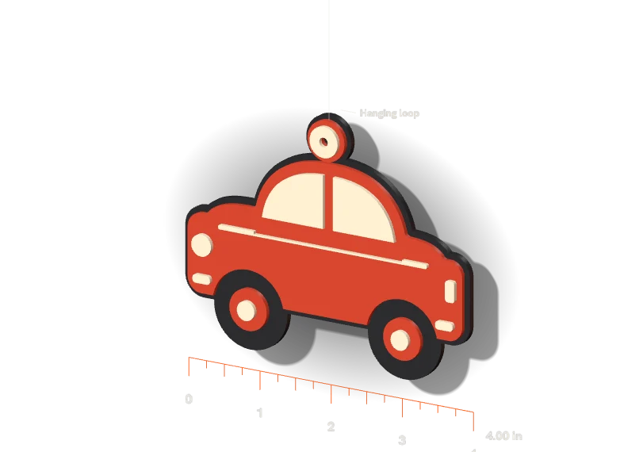

Rearview mirror ornaments
Four mirror ornaments. Two sample drafts.
$160 for all four, 7 days3 to 5 in, to your briefPETGNo supportsOne revision each

Loading
SampleDrag to rotate. Ctrl and scroll to zoom.
Loading the STL files
Ornament
Colors
View
Ruler in inches.
Fixed price$160for all four designs
- Print files. STL per color body and one 3MF per ornament
- Set up for PETG. Print profile and one revision round each
- Proof. A photo of each test print
- 7 days after your references arrive
Test print pending. Both drafts come from a real slice, not a print. Texas is a sample theme, not yours.
Print files: STL or 3MF
Texas outline with heart2 colors · 92.2 x 101.6 x 5.0 mm
How to print themTwo ways to print
- 1STL route. Load every STL of one ornament as one object. Heights are already set.
- 2Give each part a filament. One spool per color. Flat back on the plate.
- 33MF route. Everything is inside, for a Bambu Lab P2S. Other printer? Use the STLs.
Print notesCar 30 min, 16 g · Texas 23 min, 13 g · PETG
Retro car3 colors
- Print time
- 30 min
- PETG used
- 16.1 g
- Color changes
- 2
- Supports
- None
Layers 1 to 10Layers 11 to 18Layers 19 to 25
3 spools in the AMS. No AMS: pause at the layers above, swap the spool, resume.
Texas outline with heart2 colors
- Print time
- 23 min
- PETG used
- 12.9 g
- Color changes
- 1
- Supports
- None
Layers 1 to 15Layers 16 to 25
2 spools in the AMS. No AMS: pause at the layers above, swap the spool, resume.
Why PETG, not PLA
- PETG holds shape on a hot dashboard.
- PETG flexes before it cracks.
Generic PLA45 C
Bambu PETG Basic60 C
Slicer setting, not a lab test.
Slicer detailsFor your own slicer
- Printer
- Bambu Lab P2S, real BambuStudio slice
- Filament
- PETG (Bambu PETG Basic profile)
- Layer height
- 0.2 mm
- Nozzle
- 250 C (first layer 245 C)
- Bed
- 70 C, textured PEI plate
- Walls
- 4
- Infill
- 20 %
- Colors
- One body per color, changes on layer lines
- Retro car
- Changes at layer 11 (z 2.0 mm) and 19 (z 3.6 mm). Purge 1.95 g. 29m 47s, 25 layers. 8.1 g outline, 6.0 g body, 1.9 g glass, purge included.
- Texas
- Change at layer 16 (z 3.0 mm). Purge 1.17 g. 23m 12s, 25 layers. 11.0 g state base, 1.9 g heart, purge included.
| Body | Height z (mm) | Triangles | Volume |
|---|---|---|---|
| car-1-charcoal | 0.0 to 2.0 | 2,456 | 9.72 cm³ |
| car-2-red | 2.0 to 3.6 | 2,900 | 5.87 cm³ |
| car-3-cream | 3.6 to 5.0 | 2,996 | 1.22 cm³ |
| state-1-navy | 0.0 to 3.0 | 1,028 | 12.18 cm³ |
| state-2-red | 3.0 to 5.0 | 2,660 | 1.33 cm³ |
ChecksScript-checked, file by file
| File | Closed surface | Overhang over 45 deg |
|---|---|---|
| car-1-charcoal.stl | Pass | None |
| car-2-red.stl | Pass | None |
| car-3-cream.stl | Pass | None |
| state-1-navy.stl | Pass | None |
| state-2-red.stl | Pass | None |
- Closed and clean. No holes in any STL. Each 3MF matches its STLs.
- No overhang. Every wall is vertical, so nothing prints in mid-air.
- Slicer agrees. BambuStudio made 0 support paths for both ornaments.
- Same files as the viewer. The 3D view loads these STLs.
- Every file is checked by script. Closed meshes, no holes. Scripts: shapes, meshes, checks.
Sample colors. Texas outline from US Census data. No past ornament work is claimed.
Send your four references on Freelancer. Files in 7 days.
Back to the bid